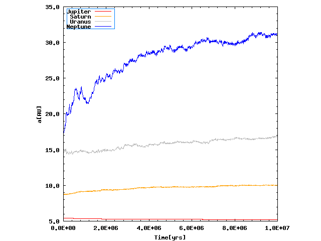
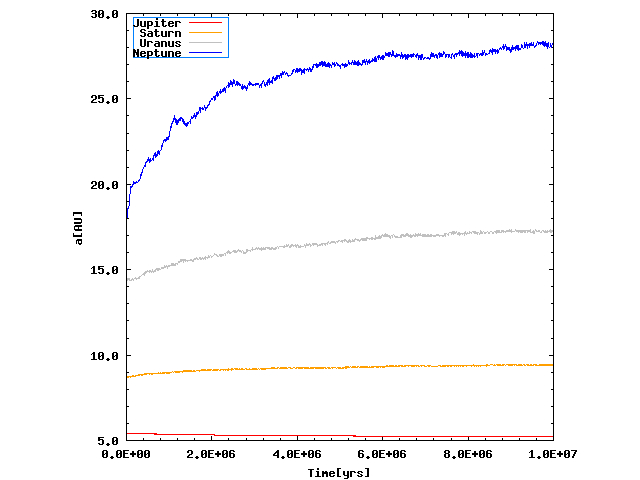
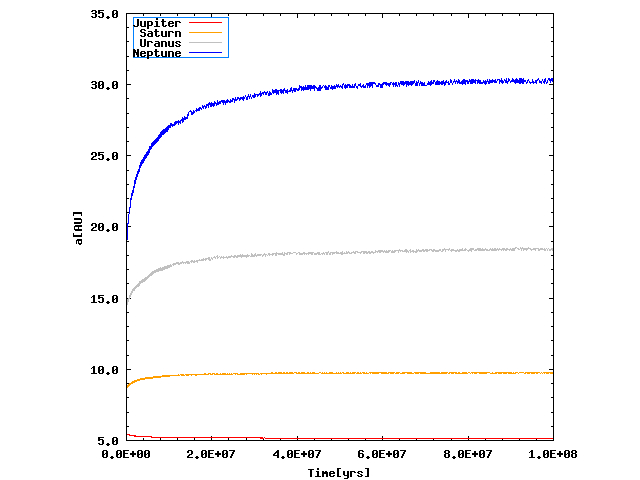
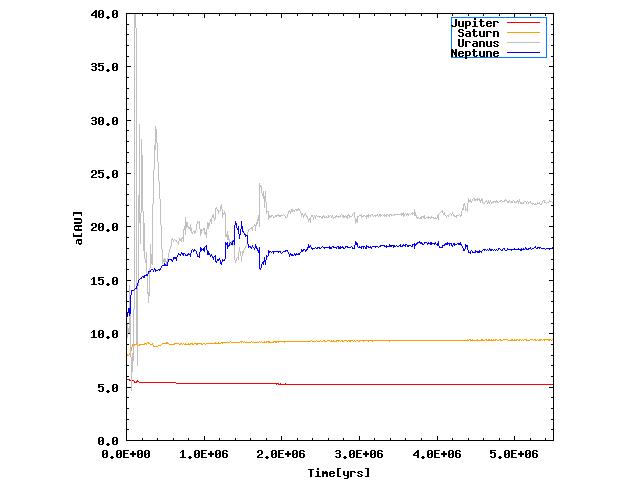

Examining the Kuiper belt sculpting
@ Max Planck Institute for Solar system research, 2015
The main goal of this research project was to see how the structures in the Kuper belt formed, mainly the eccentricity and the inclination distribution. All the simulations start just after the gas-disk dispersed and all the planets are fully formed. The only incorporated interaction is gravitational. Code that was used for all of these simulations is MERCURY (more info about the code in this paper (Chambers 1999)).
In the beginning I read some papers about the work that was previously done in this field and I tried to reproduce some of those results. I started with the paper of Rodney S. Gomes. I took his initial guess for the starting positions of the four big planets and varied the mass distribution of the Kuiper belt objects (KBOs) to see if the migration of the big planets (particularly Neptune) would change significantly between the runs. I noticed that the migration curve does not varry greatly and that it only depends on the total initial mass of the Kuiper belt. The only difference is the time interval during which the Neptune reaches it's present position. Hence, this meant that I could model the migration of Neptune, and the rest of the big planets, with smaller number of bodies with their mass included, and then take this migration curve, change the migration time interval accordingly, implement it into the code and increase the number of bodies, which will now act just as massless objects. This results in a significant boost of speed for the simulation while keeping its credibility.
The plots of the migration curves of the big planets are shown below. The initial mass of the Kuiper belt ring is ~44 Earth masses and the difference is just in the number of KBOs present at the beginning of the simulations (the inner and outer radius of the Kuiper belt ring are taken as in the Gomes (2003)). The best fit was found for these migration curves, under the assumption that the planets stay on Keplerian orbits while migrating. The fit was later on used in the simulations with an increased number of planetesimals. On the X-axis is time in years, and on Y-axis is the semimajor axis in AU.
100 KBOs
1000 KBOs
10000 KBOs
Below, you may see three videos of the eccentricity (top left), inclination (top right) and X-Y (plane) distribution of KBOs during the time span of 1 GY. The initial conditions for big planets were taken from Gomes (2003) paper. Migration of the big planets was modelled according to the migration with 10000 KBOs with total mass of ~44 Earth masses. The description of the objects shown is in the video description.
Eccentricity distribution
Inclination distribution
X-Y (plane) distribution
After I got some insight into the migration process, I read the papers of K. Tsiganis, A. Morbidelli, R. Gomes and H. F. Levison who developed the Nice model. As they claimed, a lot of the events in the Solar system history (LHB, Trojans and the resonant architecture of the big planets) were aligning with the events they got in their simulations, but it seemed that the Kuiper belt structure was still a bit outside their predictions. A. Morbidelli did a short review of the effectivness of the Nice model to explain certain structures in Solar system in this paper, where he mentioned a disagreement with observed data because of a deficit in the high inclination population of the Kuiper belt produced by the model. Reproducing the Nice model was not straightforward, because the system is quite chaotic, only a slight change in initial conditions resulst in a completely different output. Since I was just interested in the effect of the Nice model event (short instability of the outer ice giants) to the Kuiper belt structure I didn't worry about the timescale during which the instability will happen. A good starting point was a paper from K. Batygin and M. E. Brown, where they exhibited some plausible initial configurations in order to get the short instability of the outer planets. With 5:3 (Jupiter-Saturn), 4:3 (Saturn-1st Ice giant), 4:3 (1st Ice giant-2nd Ice giant) resonances, total mass of the initial Kuiper belt ring of ~58 Earth masses and the radial distribution index of -1.75 I was able to reproduce the Nice model event. Details about the number of bodies can be seen in the description of the videos. I should just note that the outer ring of bodies (in the beginning the outer ring spans from 40 to 50 AU) is massless. With this I just tried to see how much of an effect would the instability have to the structure of the bodies that were originally at the place where the present Kuiper belt is.
Migration curve with the Nice model event
Below you may see the eccentricity, inclination and X-Y plane distribution of the KBOs with the Nice model event included.
Eccentricity distribution
Inclination distribution
X-Y (plane) distribution
This paper could offer some explanations and directions to follow. The paper describes the scenario I got in the previous videos. It seems somewhat unexpected to see that the region from 40 to 50 AU doesn't react as much to the instability of the outer Ice giants as would be expected so it needs to be investigated more thoroughly.
As a bonus, while I was at Max Planck in Göttingen I worked a bit on the REBOUND package and managed to use it for my simulations. But, a problem with the close encounters remains to be adressed, because by default, the implemented WHFast algorithm (for which the authors claim to be 5 times faster than the hybrid algorithm within MERCURY) doesn't have close encounters routine. Hence, to use the code, I would need to incorporate the close encounters routine first. Fortunately, the package contains a lot of examples from which I can extract the information on how to implement this.